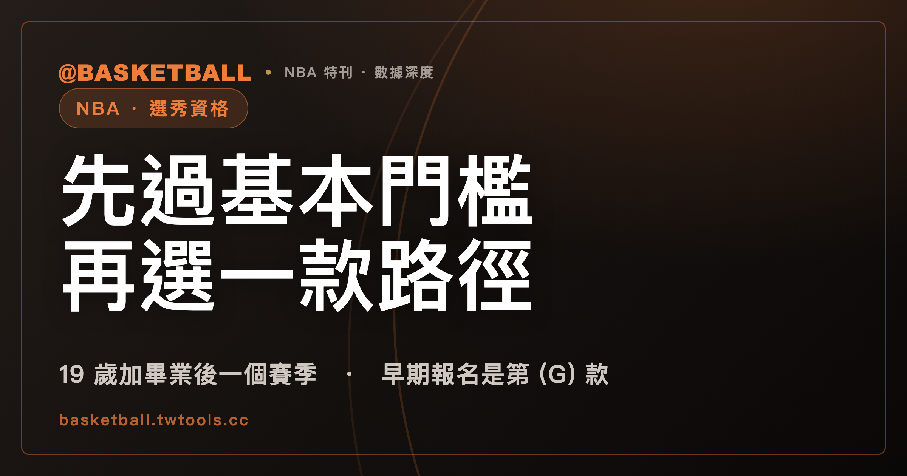

NBA 選秀資格要過兩層：先過基本門檻，再從七款路徑中滿足一款
依 2023 NBA CBA，具備選秀資格要同時滿足 Article X §1(b)(i) 的全部要求（選秀當年滿 19 歲，非國際球員另須自高中畢業起已過一個 NBA 賽季，未高中畢業者條文另有起算方式），再加上 §1(b)(ii) 七款路徑的其中一款；早期報名是七款裡的第 (G) 款，要在選秀前至少 60 天以書面送達 NBA。

新手村｜NBA・選秀資格與早期報名
聊到年輕球員進 NBA，常聽到「幾歲才能報名選秀」這種問法，好像有一條年齡線，過了線就能報名。但把 2023 NBA CBA（Collective Bargaining Agreement，勞資協議）Article X 的條文拿來讀，資格是兩層：先有一組全部都要滿足的基本門檻，再從七款路徑裡滿足其中一款。「早期報名」就是七款裡的一款。
這篇文章依 2023 NBA CBA（2023 年 7 月版）逐層拆開這套結構，也講清楚早期報名的時間點與撤回的規則。讀完之後，你應該能拿一個標明為「假設」的球員情境，自己對著條文判斷他落在哪一款、還缺哪一項。選秀的樂透與順位不在本文範圍，可以看本站的NBA 樂透入門。
簽 NBA 合約的前提，是至少有過一次選秀資格
依 2023 NBA CBA Article X §1(a)，球員要簽 NBA 合約或在 NBA 比賽，必須曾經具備至少一次選秀資格。CBA 原文的寫法是：「No player may sign a Contract or play in the NBA unless he has been eligible for selection in at least one (1) NBA Draft.」
同一款接著寫了另一句：一名球員不得具備超過兩次選秀資格（原文為 no player shall be eligible for selection in more than two (2) NBA Drafts）。也就是說，依 2023 NBA CBA，選秀資格有「至少要有一次」的下限，也有「不得超過兩次」的上限。
CBA 對「Draft」的定義很直白：NBA 每年舉行的新秀籃球員選秀（Article I）。依 Article X §2，每屆選秀在該年 7 月 10 日之前舉行，日期由 Commissioner 指定。本文沒有列出任何一屆選秀的實際日期，因為 CBA 條文本身只給相對規則，後面談到時點時，都用「選秀前多少天」表示。
基本門檻有兩項：選秀當年滿 19 歲，加上自高中畢業起過一個 NBA 賽季（未畢業者另計）
依 2023 NBA CBA Article X §1(b)，一名球員具備選秀資格的條件，是先滿足 §1(b)(i) 的全部適用要求，再加上 §1(b)(ii) 的其中一項。這句話的結構值得先記住：(i) 是「全部」，(ii) 是「其中一個」。
§1(b)(i) 的第一項是年齡。依 2023 NBA CBA §1(b)(i)(A)，球員要在選秀舉行的那個曆年之內年滿 19 歲（原文是 is or will be at least nineteen years of age during the calendar year in which the Draft is held）。條文用的是「曆年」，寫成 is or will be，代表看的是選秀當年內有沒有滿 19，不是選秀那一天的年紀。
第二項是高中畢業後過一個賽季。依 2023 NBA CBA §1(b)(i)(B)，對於不是「international player」的球員，自高中畢業起，至少要已過一個 NBA 賽季（at least one NBA Season has elapsed since the player's graduation from high school）。同一句的括號另有一個分支：球員如果沒有從高中畢業，改自「他首次就讀高中時、或最後就讀高中時所屬年級本來會畢業的那一班」的畢業時點起算，取兩者中較晚者。「international player」的定義在後面另有一節說明。
所以基本門檻可以整理成一張小表：
| 項目 | 條文位置 | 內容（依 2023 NBA CBA） |
|---|---|---|
| 年齡 | §1(b)(i)(A) | 選秀當年的曆年內至少年滿 19 歲 |
| 高中畢業後一個賽季 | §1(b)(i)(B) | 非 international player 的球員，自高中畢業起至少已過一個 NBA 賽季（未高中畢業者另有起算方式） |
第二項的條文寫明對象是「not an international player」的球員；第一項的引句裡沒有這樣的限定語。本文的讀法是：從條文字面看，年齡要求沒有標明排除國際球員，排除國際球員的是高中畢業後一個賽季這一項。這是對條文字面的讀法，CBA 沒有另外寫一句「國際球員仍須滿足年齡要求」。
門檻之上還要再滿足七款路徑的其中一款
過了 §1(b)(i) 之後，還要在 §1(b)(ii) 的 (A) 到 (G) 七款裡至少滿足一款。依 2023 NBA CBA，七款如下，括號裡是條文款次，逐款列出，不合併：
| 款次 | 條件（依 2023 NBA CBA Article X §1(b)(ii)） |
|---|---|
| (A) | 已從美國四年制大學畢業（或於選秀當年畢業），且沒有剩餘的大學籃球資格 |
| (B) | 就讀或曾就讀美國四年制大學，且其「原班」（original class）已畢業（或於選秀當年畢業），沒有剩餘的大學籃球資格 |
| (C) | 美國高中畢業、未進美國四年制大學，且自高中畢業起已過四個曆年 |
| (D) | 非美國高中畢業，且自「原本應畢業的班級」畢業起已過四個曆年 |
| (E) | 選秀當年的曆年內滿 22 歲、簽過 non-NBA professional basketball contract，並在該屆選秀前的 1 月 1 日之前已依該合約提供服務 |
| (F) | 選秀當年的曆年內滿 22 歲，且是 international player |
| (G) | 以書面表達參加選秀的意願，且該書面於選秀前至少 60 天由 NBA 收到（Early Entry） |
這張表有兩個地方值得放慢讀。第一，(C) 與 (D) 都是用「曆年」算四年，起算點是高中畢業，而 (D) 的起算點是「原本應畢業的班級」畢業的時間點。第二，(E) 與 (F) 的年齡是 22 歲，同樣看選秀當年的曆年；(E) 還多了一道時點：合約服務要在該屆選秀前的 1 月 1 日之前就已經開始。
七款各自是一種資格路徑，只要滿足其中一款，加上前面的基本門檻就成立（依 2023 NBA CBA §1(b)）。
「國際球員」與「非 NBA 職業合約」在 CBA 裡各有定義
表中有兩個詞不是日常語意，CBA 在 Article X 另有定義，讀資格時不能用直覺替代。
依 2023 NBA CBA Article X §1(c)，「international player」要同時符合三項：一、選秀前至少三年在美國境外有永久居所，並在美國境外以業餘或職業身分打籃球；二、從未就讀美國的大學；三、未在美國讀完高中（原文為三項以分號串起，(i)(ii)(iii)）。三項是並列的，少一項就不是這個定義下的 international player。
「國際球員」是站上的中文譯名，CBA 的用詞是 international player；路徑 (F) 與基本門檻裡高中畢業後一個賽季那一項，用的都是這個定義詞，不是日常說「外國球員」的意思。
依 2023 NBA CBA Article X §1(d)(i)，「non-NBA professional basketball contract」指球員與任何非 NBA 球隊或聯盟之間的合約，對方為了球員替籃球隊提供服務，付出超過生活津貼的金錢或任何形式的報酬。定義裡的門檻寫的是「in excess of a stipend for living expenses」，也就是超過生活津貼的部分。這個定義用在路徑 (E)。
早期報名在條文上是 (ii) 的第 (G) 款，仍須先過 (i) 的門檻
依 2023 NBA CBA §1(b)(ii)(G)，「Early Entry」球員的定義是：球員以書面表達參加選秀的意願，且這份書面於選秀前至少 60 天由 NBA 收到。「早期報名」是站上的中文譯名，CBA 用的是 Early Entry。
這一款可以先想想它是不是「年齡門檻的例外」。本文的讀法是：照條文的結構看，(G) 是 §1(b)(ii) 並列的其中一款，與 (A) 到 (F) 同一層；而 §1(b) 的句子是「(i) 的全部要求，加上 (ii) 的其中一項」（依 2023 NBA CBA §1(b)）。所以早期報名的球員，仍須先滿足 §1(b)(i) 的全部適用要求。這是對條文結構的推論，CBA 沒有說「早期報名不是例外」，(G) 款的條文裡也沒有使用「例外」一詞。
用一句話表示這個讀法：(G) 讓球員可以在不符合 (A) 到 (F) 的情況下走另一條路，但走到這條路之前，(i) 那一層要先過。時間點則是「選秀前至少 60 天」的相對規則。當屆選秀的實際報名截止日，本文沒有列出，請以 NBA 當屆公告為準。
撤回有兩條規則：選秀前 10 天前送達書面通知，且不得從超過兩次選秀中撤回
依 2023 NBA CBA Article X §8(c)，依 (G) 具備下一屆選秀資格的 Early Entry 球員，有權以書面通知撤回，通知必須在選秀前 10 天由 NBA 收到（原文為 received by the NBA ten (10) days prior to such Draft）。
同一段的另一句是：球員不得從超過兩次的 NBA 選秀中撤回（a player shall not be entitled to withdraw from more than two (2) NBA Drafts）。
把兩個數字放在一起看，要留意「兩次」出現在兩個不同的地方：§1(a) 說的是具備選秀資格的次數不得超過兩次，§8(c) 說的是撤回的次數不得超過兩次。這是兩條各自的條文，本文不把它們連成因果，也不主張兩者的關係；要判斷實際情況時，兩條要各自對照。
同樣的道理也適用時點：60 天是「書面送達 NBA」的下限，10 天是「撤回通知送達 NBA」的下限。兩個時點都是「選秀前」的相對天數，都以 NBA 收到為準（依 2023 NBA CBA §1(b)(ii)(G) 與 §8(c)）。
早期報名的球員被選中之後，CBA 另有兩條各自獨立的處理規則
資格之後，Article X 對「以早期報名資格被選中」的球員另有安排，這裡只做簡單的認識，細節請直接讀條文。以下每一條都依 2023 NBA CBA，且兩條分開看：
第一條是 §6(b)。早期報名球員被選中後，如果之後打大學籃球，選中他的球隊保有 NBA 專屬的交涉與簽約權，期間到「若非成為早期報名球員，他本來首次具備被選中資格的那一屆選秀」日期起一年為止；前提是球隊每年依期限做 Required Tender（CBA 定義詞，站上沒有既定譯名，寫英文原文）。
第二條是 §6(a)。早期報名球員被選中後，如果沒有在球隊做 Required Tender 之後與該隊簽下球員合約，也沒有在「後續選秀」（CBA 定義詞 Subsequent Draft）中被選中，他就成為 Rookie Free Agent。依 2023 NBA CBA Article I，Rookie Free Agent 的定義之一，是不再受任何球隊專屬談判權約束、可被任何球隊簽下的 Draft Rookie（另一類是 Non-Draft Rookie）。
Rookie Free Agent 是 CBA 的定義詞，與站內另一篇談的 restricted free agency 是不同的詞，後者請看限制性自由球員入門。本文不展開未被選中球員之後如何處理，這一塊沒有取得對等的條文說明。
這套規則寫在 2023 CBA 裡，版本有起訖
本文所有規則主張都依 2023 NBA CBA（2023 年 7 月版）。依 Article XXXIX §1，這份協議自 2023 年 7 月 1 日生效，若未依條文終止，持續到 2030 年 6 月 30 日（原文為 shall continue in full force and effect through June 30, 2030）。依 §2，NBA 與球員工會各有權在 2029 年 6 月 30 日終止協議，須在 2028 年 10 月 15 日或之前書面通知對方。
這代表兩件事：一、本文的年齡、路徑與撤回規則，屬於 2023 CBA 這一版；二、這份協議之後的版本，本文沒有取得，資格規則若有更動，不能直接沿用這裡的數字。HBL 有自己的資格規程，見本站的HBL 球員資格入門，與 NBA 的 CBA 是兩套制度，本文不做比較。
拿三個假設情境，自己判一次
下面三個都是「假設」的情境，用來練習套條文，不是任何真實球員的案例。判斷順序是編輯提供的讀法，不是官方步驟：先看 §1(b)(i) 的全部適用要求，再找 §1(b)(ii) 有沒有一款成立，最後如果走 (G)，看時點。
假設情境一。 某球員在美國讀高中，畢業後進入美國四年制大學，並在選秀當年從該校畢業，沒有剩餘的大學籃球資格。假設他符合 (i) 的全部適用要求。判斷：依 2023 NBA CBA，這符合 (A) 款的條件描述，(ii) 那一層成立。
假設情境二。 某球員從美國高中畢業，沒有進美國四年制大學，畢業後已過四個曆年。假設 (i) 已滿足。判斷：依 2023 NBA CBA，這符合 (C) 款。要注意的是，(C) 的條件之一是「未進美國四年制大學」，如果他曾經註冊入學，就要回頭看其他款次。
假設情境三。 某球員在美國高中畢業，讀了一年美國四年制大學，選秀當年 19 歲，原班尚未畢業，沒有簽過 non-NBA professional basketball contract。假設他的 (i) 已滿足。判斷：(A) 與 (B) 要求大學畢業或原班畢業；(C) 要求未進大學；(D) 針對非美國高中畢業；(E) 與 (F) 要求 22 歲。在這個假設裡，(A) 到 (F) 的條件描述都對不上，條文上剩下可以檢視的是 (G)：以書面表達意願，且在選秀前至少 60 天送達 NBA。如果之後想撤回，依 §8(c) 要在選秀前 10 天送達通知，且撤回次數有兩次的限制。
想自己再練一次的話，可以先把三個問題寫在紙上：年紀在選秀當年有沒有滿 19、高中畢業後有沒有過一個 NBA 賽季（國際球員除外，沒有高中畢業的另有算法）、七款裡有沒有一款對得上。三個都答得出來，這套資格的骨架就讀懂了。
常見問題
NBA 選秀資格只看年齡嗎？
不是。依 2023 NBA CBA Article X §1(b)，資格是 §1(b)(i) 的全部適用要求（選秀當年的曆年內年滿 19 歲；非 international player 的球員另須自高中畢業起至少已過一個 NBA 賽季，未高中畢業者條文另有起算方式），加上 §1(b)(ii) 七款路徑 (A) 到 (G) 的其中一款。這是 2023 CBA（2023 年 7 月版）的規定，之後的版本本文沒有取得。
早期報名是對年齡門檻的例外嗎？
本文的讀法是：不是例外，而是 §1(b)(ii) 並列七款裡的第 (G) 款，且 §1(b) 的結構是 (i) 全部加 (ii) 其中一項，所以走 (G) 仍須先過 (i)。這是對 2023 NBA CBA 條文結構的推論；CBA 在 (G) 款並沒有使用「例外」一詞，也沒有明說「不是例外」。
早期報名之後還能撤回嗎？
依 2023 NBA CBA Article X §8(c)，依 (G) 具備資格的 Early Entry 球員，可以書面通知撤回，通知要在選秀前 10 天由 NBA 收到；球員不得從超過兩次的 NBA 選秀中撤回。當屆選秀的實際日期與截止日，本文沒有取得，只寫得出「選秀前 60 天」與「選秀前 10 天」這兩個 CBA 的相對時點。
國際球員也要滿足 19 歲的年齡要求嗎？
依 2023 NBA CBA Article X §1(b)(i)，條文明文排除 international player 的是 (B) 項，也就是自高中畢業起（未畢業者另計）過一個賽季的要求；(A) 項的年齡要求引句裡沒有這個限定語。本文的讀法是：從條文字面看，年齡要求沒有標明排除國際球員。「international player」要同時符合 §1(c) 的三項定義，才是這個詞在 CBA 裡的意思。
資料來源
- 2023 NBA Collective Bargaining Agreement（2023 年 7 月版）全文：Article I（Draft、Rookie Free Agent 定義）、Article X §1（資格，含 (a)(b)(c)(d)）、§2（選秀時間）、§6（早期報名球員被選中後的權利）、§8(c)（撤回）、Article XXXIX §1–§2（協議期間）。本機文字快照，2026 年 9 月 29 日取得；無可點擊的公開網址，NBA 官方網頁在取得當日皆未能開啟。